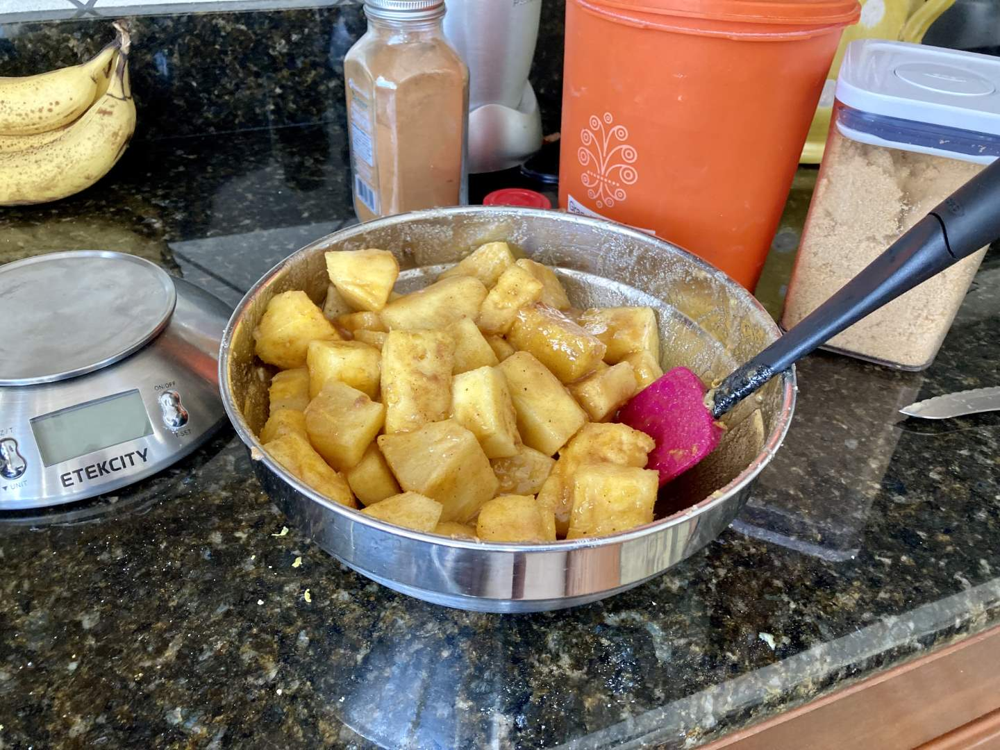

Pie 36: Pineapple
2024-03-03Recipe from Immaculate Bites.
Taste:
Difficulty:
Vibes:
Suggested pairing: chicken pot pie
Most members of the Dowling family highly esteem pineapple, yet none had tried the pie version. We decided to change this for the better on a recent visit to Tennessee.
The recipe we found called for 1200-1400 grams of fresh pineapple chunks spiced like an apple pie between two pretty standard crusts. At the local Publix (only in the South) we hedged our bets and bought two pineapples, thinking one wasn’t enough. Good decision! Both fruits together were just over 1200 grams
The crust recipe was far too dry and required a lot of work to create a dough ball. In hindsight, our favorite crust recipe would have been better. After a period of rest in the fridge, I rolled out the crust, piled in the pineapple chunks, and wove a lattice crust with one of Katie Beth’s little sisters. We intentionally made the lattice with thinner strips than normal for the visual effect and brushed the top with cream.
The pie smelled delicious in the oven and looked beautiful while cooling.
Turns out pineapples are pretty juicy--who knew? As a result, the bottom was a bit soggy. The thinner-than-average top lattice wasn’t strong enough to hold the slices. The taste was delicious despite any structural problems. If we made another pineapple pie, I would cut the chunks a bit smaller--maybe ½ inch wide at most. Overall, it was a quality pie, and all Katie Beth’s relatives who tried it were pleased.